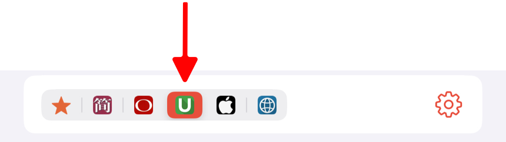
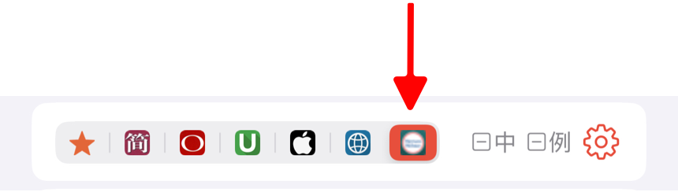

TingYue supports importing dictionaries in the MDICT format. Additionally, users can download and import optimized dictionaries shared by the community from our cloud storage. These dictionaries function just like the built-in dictionaries in TingYue, allowing users to select and learn individual definitions of words.
Import MDICT Dictionaries
MDICT dictionaries typically consist of three types of files: mdx, mdd, and css. Follow the steps below to import dictionary files into TingYue.
-
Organize Dictionary Files on Your Computer
Place all files related to the dictionary you wish to import into a single folder. It is recommended to create separate folders for each dictionary for easier management. -
Sync Dictionary Files to Your Device
-
iPhone/iPad
- Sync the entire dictionary folder from your computer to the TingYue app on your iPhone/iPad. If you are using a Mac, follow the Mac Sync Guide. If you are using a Windows PC, follow the PC Sync Guide.
- On your device, open the Files app, navigate to “On My iPhone” -> “TingYue,” and confirm that the dictionary files have been properly placed in the TingYue directory.
-
Mac
- Open the Terminal app.
- In the terminal, enter the following command (replace
xxxwith your Mac username) to open the dictionary storage directory:
open /Users/xxx/Library/Containers/com.xuehu.words/Data/Documents/dicts
- Copy your dictionary folder into this directory.
-
-
Restart TingYue
After syncing, restart the TingYue app, and the dictionaries will be automatically loaded. -
Use Imported Dictionaries
When looking up words, tap the dictionary menu icon in the dictionary details page to access imported dictionaries.
in the dictionary details page to access imported dictionaries.
If the menu icon is not visible, tap the settings button on the right and enable “User Dictionary” in the dictionary settings page.
Import TingYue Dictionaries
TingYue dictionaries are user-shared dictionaries specifically optimized for use with the app. These dictionaries function similarly to built-in dictionaries and allow users to select and learn individual definitions of words. You can download and import them into TingYue from our cloud storage.
Downloading on a Computer
- Visit the Baidu Cloud Link and download the dictionary files with the
.ziptdextension. - Once downloaded, rename the file extension from
.ziptdto.zipand extract the files. - Follow the steps in Importing MDICT Dictionaries to import the extracted files into the TingYue app.
- Restart TingYue after import.
Downloading on iPhone/iPad
- Open the shared link using the Baidu Cloud app and download dictionary files with the
.ziptdextension. - After downloading, tap the file, select Open with Other Apps, then choose Save to Files and save it to the TingYue directory.
- Open the Files app, navigate to Browse -> On My iPhone -> TingYue, find the downloaded dictionary file, long-press it, and rename the extension from
.ziptdto.zip. - Tap the
.zipfile to extract it. - Once extraction is complete, restart TingYue.
After importing, a dedicated icon will appear in the menu bar to indicate the dictionary. For example, after importing “Merriam-Webster Advanced Learner’s Dictionary.ziptd”, the menu bar will display:

To use an imported dictionary, simply tap its icon in the menu. If the icon does not appear, tap the settings button on the right and enable the imported dictionary in the dictionary settings page.